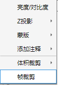
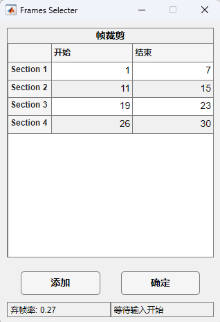
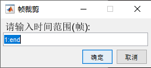

1.2.8 帧裁剪

帧裁剪用于裁剪数据的时间范围。
帧裁剪首先使用设计更为人性化的GUI界面，如下图所示
配合主面板显示不同帧图像，可以通过在主面板上点击"Ctrl + a"(不区分大小写) 组合键增加裁剪端点，也可以通过点击“添加”按钮增加裁剪端点。
左下方显示丢弃帧的比率以及关于丢弃帧随机性的假设检验，这里假设坏帧出现的时间服从泊松分布(正在开发)。
右下方显示当前输入状态，等待输入开始代表接下来选定的裁剪端点作为一段保留帧的起始端点，反之则为结束端点。完成后点击“确定”按钮即可。
如果您对此GUI界面或裁剪方案持否定态度，也可以选择关闭该GUI，此时将弹出帧裁剪(经典)对话框，如下图所示
请在提示框内输入裁剪(保留)范围。框内使用MATLAB切片语法，end代表最后一帧。如果此时仍然取消，将取消帧裁剪操作。

注：所有裁剪操作均不可逆，这意味着如果裁剪出错需要重新读入原始文件或工作区变量，请谨慎操作！